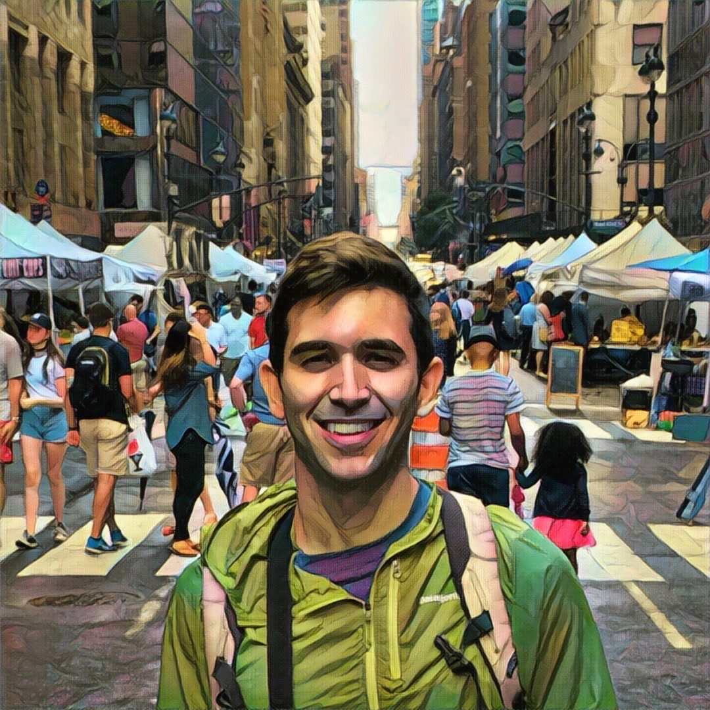
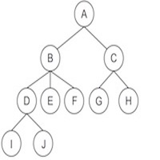

I am a Ph.D. student in the Computation and Neural Systems program at the California Institute of Technology. I am co-advised by Professors Pietro Perona and Yisong Yue. Before coming to Caltech, I received my B.S. in physics from the University of Minnesota, Twin Cities.
My academic interests are at the intersection of machine learning and neuroscience, with the end goal toward developing machine intelligence, while drawing inspiration from biology where appropriate. My research has been primarily in deep learning for the purposes of computer vision, specifically, object recognition.
Data classes, in this case, visual objects, do not live in isolation. There often exists some underlying structure in the relationships between classes, contained in a taxonomy. Many current methods of training classifiers make no use of taxonomies. Rather, data classes are learned independently. In this line of research, I have investigated a number of methods of using the ImageNet taxonomy to train deep neural networks for object recognition. These methods include constructing taxonomic cost functions as well as a taxonomic variant of curriculum learning. One additional advantage of taxonomic training is the ability of the classifier to predict internal nodes. For instance, when confronted with a generic looking dog, the classifier can predict "dog" instead of predicting a specific breed of dog.